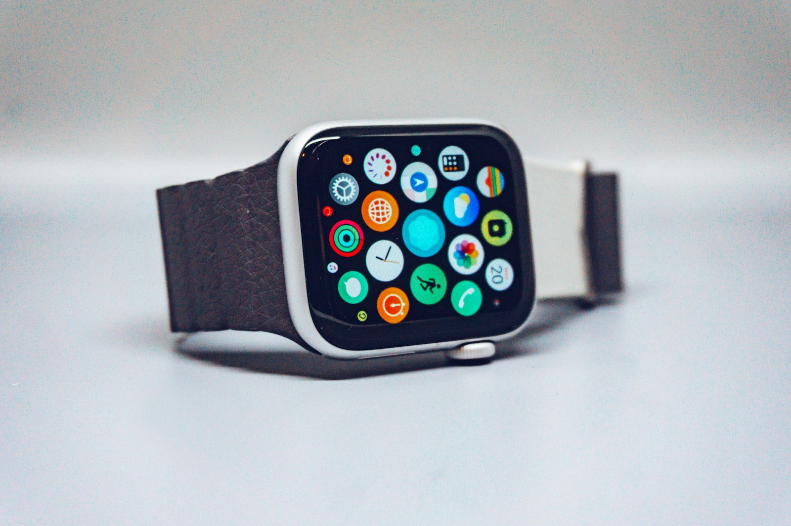

CH.01
为什么她的清单值得抄
Why This List
2024 年巴黎奥运会，郑钦文拿下中国网球首枚奥运单打金牌，也是亚洲球员第一次站上奥运网球最高领奖台。赛后 48 小时，她的同款 Wilson 球拍在天猫国际搜索量暴涨，成交量翻了几十倍；她戴的 Oura Ring 被全网追问「什么牌子」；那双 Nike Vapor 12 法网限定配色一度断货。
但这不是简单的明星同款效应。她的清单里没有冷门黑科技，也没有标新立异的设计——全是职业圈已经验证过很多年的成熟产品。对业余球友来说，这反而是最省事的参考：不用试错，照着买不会踩坑。
CH.02
清单五件
The Five
按「球拍 → 球鞋 → 恢复 → 服装配件 → 球」的顺序排，也是大多数人添装备的实际顺序。


03 / RECOVERY
Oura Ring 4 智能戒指
¥2,500–3,800
顶级运动员里使用率最高的可穿戴设备之一。银黑钛合金指环，戴手上更像首饰，不像手表那样张扬。
监测心率、心率变异性（HRV）、血氧、睡眠阶段、体温与活动量。职业选手用它判断恢复状态：HRV 偏低、睡眠差，当天训练强度就得降。核心价值不是「测数据」，是帮你读懂身体。


05 / BALLS
Wilson US Open 比赛网球
¥35–79
美网与奥运会用球。优质毛毡 + 天然橡胶内胆，弹跳稳定、耐打。硬度适中，击球声清脆。
想体验「大满贯同款」是什么手感，这是最便宜的入场券。三只装日常练球，十二只装够一次完整训练课。
CH.03
她的选择逻辑
The Logic
不追新、不试错、只选最稳的。职业体育里装备的可靠性比什么都重要——比赛当天你不需要「惊喜」。
这个逻辑对业余球友同样成立：与其每年换一把网红球拍，不如选一套经过职业赛场验证的装备，然后把钱和时间花在练球上。装备解决的是下限，训练决定上限。
预算有限怎么排：球鞋 → 球拍 → 球 → 服装 → 恢复设备。前四件直接决定你能不能好好打球，Oura 这类恢复设备属于「打得多、怕受伤」阶段的加分项。
CH.04
FAQ · 三个常问
Questions
Q1能买到和她一模一样的球拍吗？
买不到完全一样的。她用的是定制版 PS97（pro stock 级），重量、平衡、握柄都按她的手型调过。市售 Pro Staff 97 V14 参数接近，是最合理的替代。
Q2Oura Ring 对业余球友有用吗？
有用，但价值不在「训练优化」，在「别受伤」。业余球友最常见的问题是疲劳积累而不自知，准备度评分低的时候它会直接提醒你休息。订阅制按月收费，长期成本要算进去。
Q3Vapor 12 适合红土吗？
适合。它的外底纹路在红土和硬地都能用，她本人在法网穿的就是这双。但如果你常打红土且滑步多，专门的红土外底（颗粒更粗、橡胶更软）会更耐用。
CH.05
继续看
Related